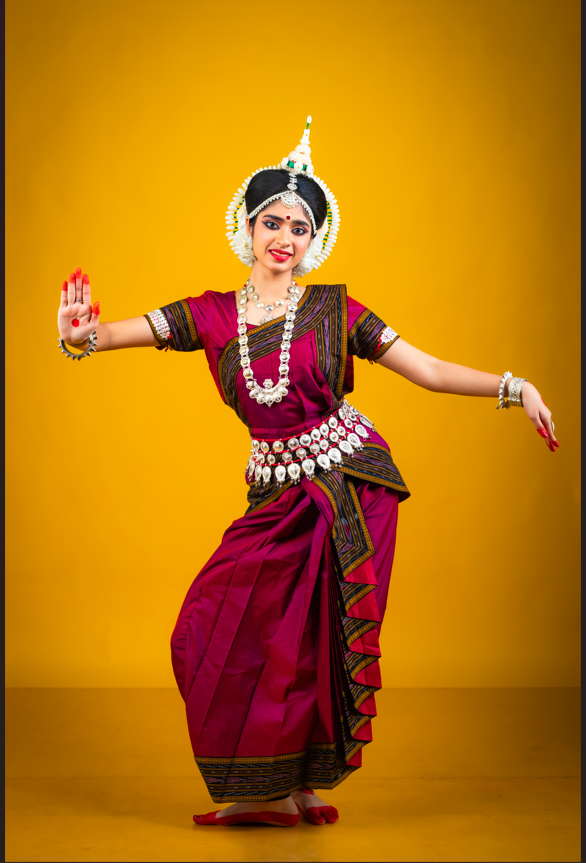

Aspiring Engineer | Leader | Classical Dancer
Kolkata, West Bengal | gargipatel5106@gmail.com
Hello! I'm Gargi Patel, a passionate student with strong interests in STEM, leadership, and classical arts. I enjoy building impactful projects and continuously learning new technologies.
Captain of Orchid House, leading teams to multiple victories in academics, sports, and cultural events.